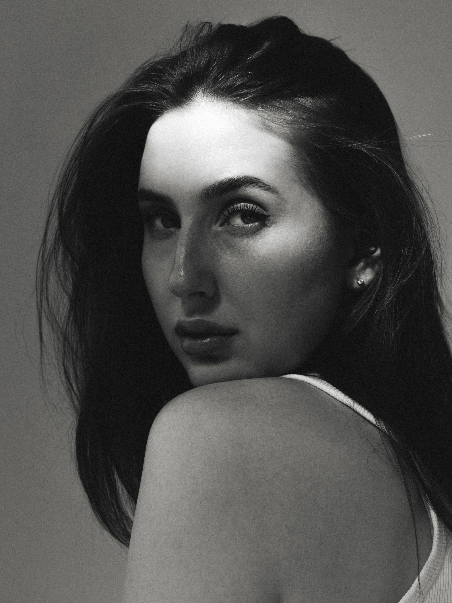
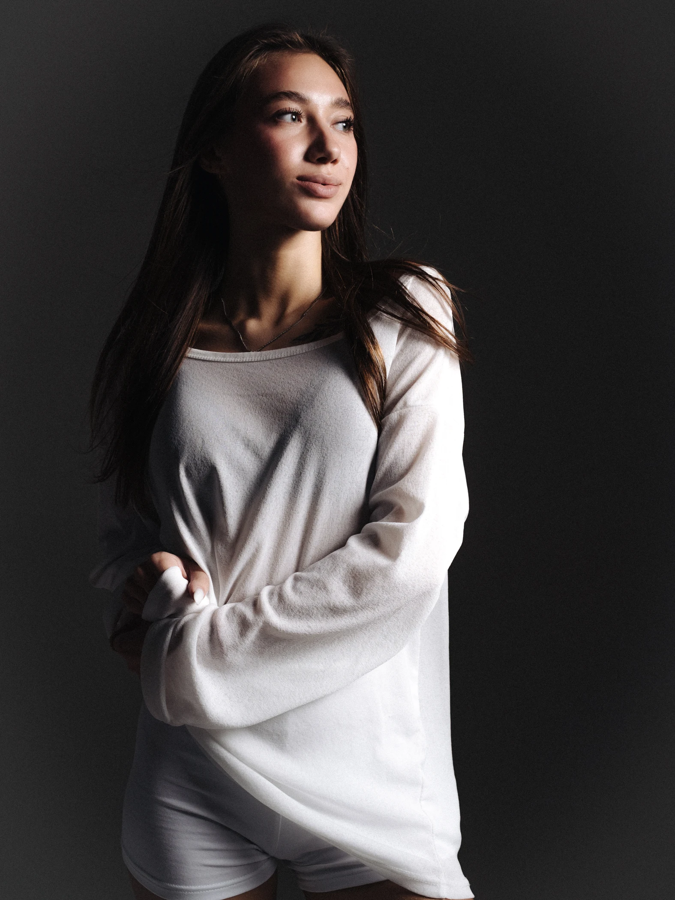
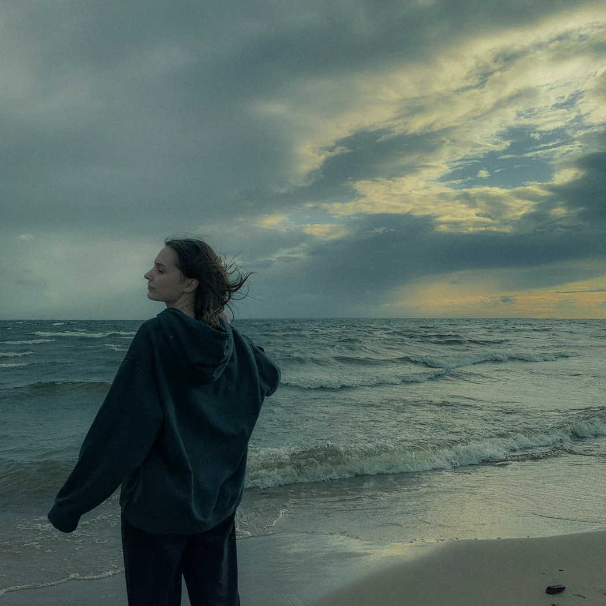

ЕлизаветаПортрет

СофияПортрет
Избранные фотографии
Серии
Обо мне
В центре кадра — человек.

Меня зовут Мария, я фотограф с 5-летним опытом. Люблю современную фотографию с легкой пленочной эстетикой и кадры с характером: стильные, атмосферные и продуманные до деталей.
Снимаю портреты, индивидуальные истории, Love Story, работаю в студии и на улице. А еще с интересом берусь за проекты, которые выходят за рамки привычного.
Ещё несколько кадров
На связи